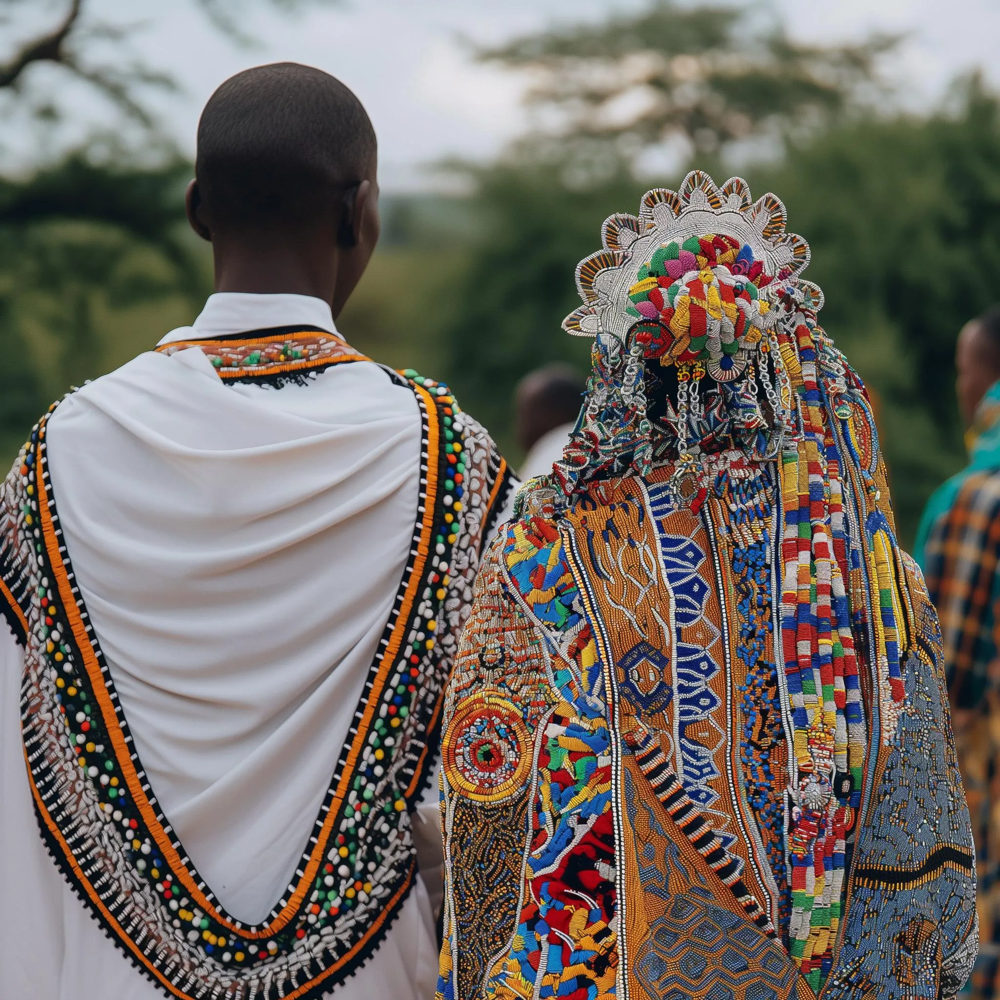

Tanzanian Weddings: A Celebration of Culture, Family, and New Beginnings
Weddings in Tanzania are more than just a union of two people—they're a vibrant fusion of tradition, culture, and celebration that brings families together for an unforgettable experience. From the intricate rituals that have been passed down through generations to the joyful festivities that last for days, a Tanzanian wedding is a symbol of love, unity, and heritage.
Whether you're tying the knot or exploring Tanzania Honeymoon Safari options, let's dive into the rich tapestry of Tanzanian weddings and the traditions that make them so unique.

The Proposal: Tradition Meets Modernity
The journey to a Tanzanian wedding begins with a proposal steeped in tradition. Historically, a man would ask the father of his bride-to-be for permission to marry his daughter. This gesture signifies respect for the family’s patriarch and acknowledgment of the community’s importance in the couple's future.
However, modern couples are redefining this tradition. While many still choose to honor the practice of asking for the father’s blessing, some opt for more direct, egalitarian proposals. In these cases, the man proposes directly to his partner, often with a symbolic gift such as jewelry, blending modern romance with cultural roots.
Regardless of the method, engagements are a time of celebration for both families, and the joy of new beginnings fills the air as plans for the wedding commence.
Pre-Wedding Rituals: Uniting Families
In Tanzanian culture, marriage is not just the union of two individuals but the coming together of two families. This is especially evident in the pre-wedding rituals, where both families engage in a series of ceremonies and traditions designed to strengthen their bond.
One of the most significant pre-wedding customs is the dowry, known as “mahari.” The groom’s family presents gifts to the bride’s family, often including money and cattle, as a gesture of appreciation for raising their future daughter-in-law. This practice symbolizes the merging of two families and solidifies the union.
Another vital ritual is the blessing of ancestors. Before the wedding, both the bride and groom participate in separate ceremonies where they ask their ancestors for blessings on their marriage. These ceremonies, held with elders and close family members, ensure the couple’s future happiness and success by seeking the protection and guidance of their forebears.
Wedding Attire: A Celebration of Heritage
Tanzanian wedding attire is a beautiful expression of cultural pride and tradition. Brides often wear colorful khanga fabrics, featuring stunning African prints and patterns, symbolizing their heritage. A kitenge, a traditional headscarf or shawl, completes the ensemble, adding an extra layer of color and elegance.
Grooms wear kanzus, full-length tunics that are usually white or light in color. Some grooms add a modern touch by pairing the kanzu with a suit jacket or coat, while the traditional kofia hat adds a splash of vibrant color.
Bridesmaids and groomsmen follow suit, dressed in coordinating traditional fabrics and styles that reflect the couple’s cultural roots. Together, the wedding party becomes a vibrant celebration of Tanzanian heritage, blending ancient traditions with modern elegance.
The Ceremony: A Blend of Tradition and Faith
Tanzanian wedding ceremonies are joyful, energetic events that bring together family, friends, and community. Depending on the couple’s religious or cultural background, ceremonies are often held in churches, mosques, or even outdoor spaces surrounded by the beauty of nature.
The wedding procession marks the start of the ceremony, as the bride and groom are accompanied by their loved ones to the altar. Here, they exchange vows that emphasize the importance of love, respect, and lifelong partnership.
Religious readings, often from the Bible or Quran, add spiritual depth to the occasion. Elders may also perform unique blessings or rituals based on the couple’s specific ethnic background, offering guidance and wisdom to the newlyweds.
The Reception: Food, Dance, and Joy
The real celebration begins at the reception, where Tanzanian weddings come alive with music, dancing, and abundant food. The bride and groom make a grand entrance, greeted by the joyous ululations of their families and friends. The energy is electric as the newlyweds share their first dance before inviting everyone to join in on the dance floor.
Food is a central part of the festivities, with guests treated to a buffet of Tanzanian dishes such as pilau, biryani, chapati, and nyama choma (grilled meat). These flavorful dishes fuel the night’s celebrations as guests feast and toast to the couple’s future.
Gift-giving is another cherished tradition. Guests present the bride and groom with household items, appliances, and money, often in envelopes. These gifts symbolize the community’s support in helping the couple start their new life together.
The Honeymoon: Exploring Tanzania’s Natural Wonders
After the wedding, many Tanzanian couples embark on a romantic honeymoon that showcases the country’s breathtaking landscapes. The Tanzania Honeymoon Safari is a top choice, offering newlyweds the chance to experience luxury lodges, stunning sunsets, and incredible wildlife encounters.
Couples can also choose from a variety of Kilimanjaro Climbing Routes to add adventure to their honeymoon. Trekking Africa’s highest peak together offers an unforgettable start to a lifetime of shared experiences.
For those seeking a more relaxed escape, Tanzania Family Safari Packages offer newlyweds the perfect mix of romance and adventure. Whether it’s the pristine beaches of Zanzibar, a hot air balloon ride over the Serengeti, or a secluded lodge in the Ngorongoro Crater, these packages cater to both romantic getaways and future family trips.

Conclusion: A Celebration Beyond Tradition
The Maasai people, known for their distinctive attire, vibrant beadwork, and pastoral way of life, offer visitors the opportunity to learn about their traditional customs and heritage. Cultural experiences such as visiting Maasai villages, attending cultural ceremonies, and participating in community projects provide insight into Maasai culture and way of life.
And after the vows are said and the reception winds down, there’s no better way to continue the celebration than with a Tanzania Honeymoon Safari, where the romance of the African wilderness awaits. Whether you choose the adventurous Kilimanjaro Climbing Routes or the serenity of Tanzania Family Safari Packages, Tanzania offers the ultimate destination for beginning your lifelong journey together.
Leave a comment